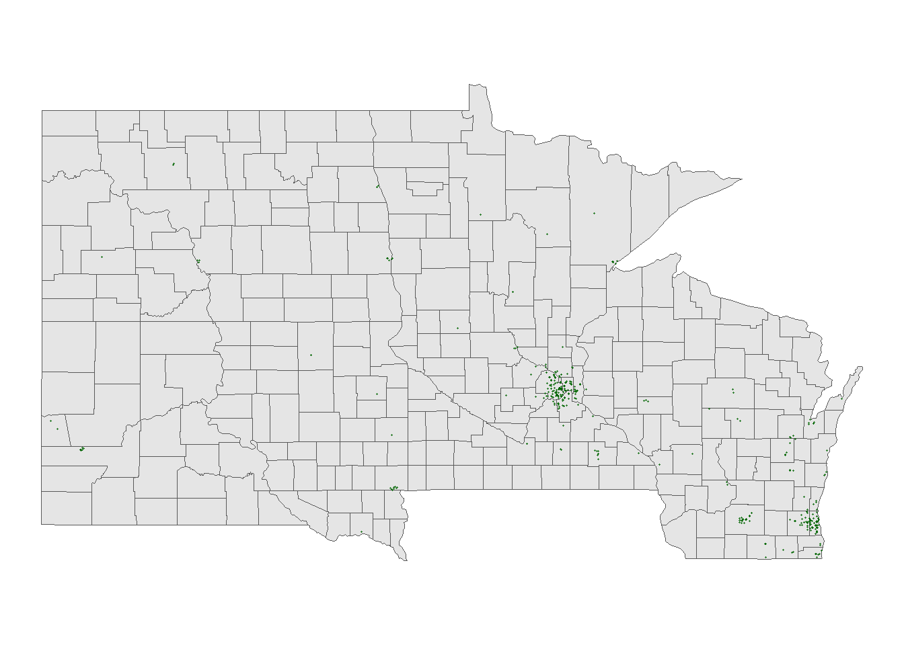
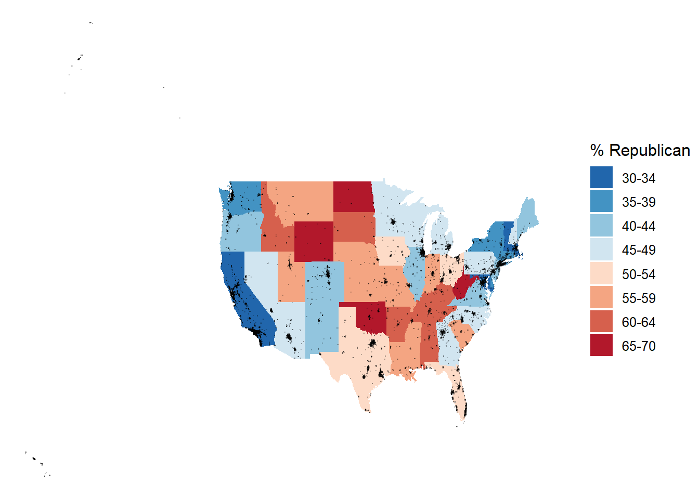

── Attaching core tidyverse packages ──────────────────────── tidyverse 2.0.0 ──
✔ dplyr 1.1.4 ✔ readr 2.1.5
✔ forcats 1.0.0 ✔ stringr 1.5.1
✔ ggplot2 3.5.1 ✔ tibble 3.2.1
✔ lubridate 1.9.3 ✔ tidyr 1.3.1
✔ purrr 1.0.2
── Conflicts ────────────────────────────────────────── tidyverse_conflicts() ──
✖ dplyr::filter() masks stats::filter()
✖ dplyr::lag() masks stats::lag()
ℹ Use the conflicted package (<http://conflicted.r-lib.org/>) to force all conflicts to become errors9 Spatial Viz
-Part 1: Interactive points on a map with leaflet
Use this file for practice with the spatial viz in-class activity. Refer to the class website for details.
-Exercise 1: A leaflet with markers / points
fave_places <- read.csv("https://hash-mac.github.io/stat112site-s25/data/our_fave_places.csv")
# Check it out
head(fave_places) latitude longitude
1 59 18
2 45 -93
3 33 -117
4 40 116
5 40 106
6 37 -122Part A
Warning: package 'leaflet' was built under R version 4.4.2# Now what do we have?
# longitude and latitude refer to the variables in our data
leaflet(data = fave_places) |>
addTiles() |>
addMarkers(lng = ~longitude, lat = ~latitude)# Since we named them "longitude" and "latitude", the function
# automatically recognizes these variables. No need to write them!
leaflet(data = fave_places) |>
addTiles() |>
addMarkers()Part B
-It looks like the graph is very accurate, if we zoom in we see a google maps esque type interface
-Exercise 2: Details
Warning: package 'gplots' was built under R version 4.4.2
Attaching package: 'gplots'The following object is masked from 'package:stats':
lowess# We can add colored circles instead of markers at each location
leaflet(data = fave_places) |>
addTiles() |>
addCircles(color = col2hex("red"))# We can change the background
# Mark locations with yellow dots
# And connect the dots, in their order in the dataset, with green lines
# (These green lines don't mean anything here, but would if this were somebody's travel path!)
leaflet(data = fave_places) |>
addProviderTiles("USGS") |>
addCircles(weight = 10, opacity = 1, color = col2hex("yellow")) |>
addPolylines(
lng = ~longitude,
lat = ~latitude,
color = col2hex("green")
)–Exercise 3: Your turn
-Part 2: Static points on a map
- Exercise 3: A simple scatterplot
I mean, the graph doesnt really tell us anything. We dont know anything about the stores, just that there is a cluster of them at around (93,45)
-Exercise 4: Adding a country-level background
Part A
Warning: package 'rnaturalearth' was built under R version 4.4.2Part B
# What does this code produce?
# What geom are we using for the point map?
ggplot(world_boundaries) +
geom_sf()
Registered S3 method overwritten by 'mosaic':
method from
fortify.SpatialPolygonsDataFrame ggplot2
The 'mosaic' package masks several functions from core packages in order to add
additional features. The original behavior of these functions should not be affected by this.
Attaching package: 'mosaic'The following object is masked from 'package:Matrix':
meanThe following objects are masked from 'package:dplyr':
count, do, tallyThe following object is masked from 'package:purrr':
crossThe following object is masked from 'package:ggplot2':
statThe following objects are masked from 'package:stats':
binom.test, cor, cor.test, cov, fivenum, IQR, median, prop.test,
quantile, sd, t.test, varThe following objects are masked from 'package:base':
max, mean, min, prod, range, sample, sum# Add a point for each Starbucks
# NOTE: The Starbucks info is in our starbucks data, not world_boundaries
# How does this change how we use geom_point?!
ggplot(world_boundaries) +
geom_sf() +
geom_point(
data = starbucks,
aes(x = Longitude, y = Latitude),
alpha = 0.3, size = 0.2, color = "darkgreen"
) +
theme_map()Warning: Removed 1 row containing missing values or values outside the scale range
(`geom_point()`).
Part C
It appears to me that Starbucks are mostly clustered in urban areas, and are in much higher quantities in the nothern hemisphere, and even more specifically, a few northern hemisphere countries
-Exercise 5: Zooming in on some countries
Part A
Part B

# Add the points
# And zoom in
ggplot(cma_boundaries) +
geom_sf() +
geom_point(
data = starbucks_cma,
aes(x = Longitude, y = Latitude),
alpha = 0.3,
size = 0.2,
color = "darkgreen"
) +
coord_sf(xlim = c(-179.14, -50)) +
theme_map()
-Exercise 6: A state and county-level map
Part A
Warning: package 'sf' was built under R version 4.4.2Linking to GEOS 3.13.0, GDAL 3.10.1, PROJ 9.5.1; sf_use_s2() is TRUEWarning: package 'maps' was built under R version 4.4.2
Attaching package: 'maps'The following object is masked from 'package:purrr':
map# Get the boundaries
midwest_boundaries <- st_as_sf(
maps::map("county",
region = c("minnesota", "wisconsin", "north dakota", "south dakota"),
fill = TRUE, plot = FALSE))
# Check it out
head(midwest_boundaries)Simple feature collection with 6 features and 1 field
Geometry type: MULTIPOLYGON
Dimension: XY
Bounding box: xmin: -96.81268 ymin: 45.05167 xmax: -93.01397 ymax: 48.53526
Geodetic CRS: +proj=longlat +ellps=clrk66 +no_defs +type=crs
ID geom
minnesota,aitkin minnesota,aitkin MULTIPOLYGON (((-93.03689 4...
minnesota,anoka minnesota,anoka MULTIPOLYGON (((-93.51817 4...
minnesota,becker minnesota,becker MULTIPOLYGON (((-95.14537 4...
minnesota,beltrami minnesota,beltrami MULTIPOLYGON (((-95.58655 4...
minnesota,benton minnesota,benton MULTIPOLYGON (((-93.77027 4...
minnesota,big stone minnesota,big stone MULTIPOLYGON (((-96.10794 4...Part B
ggplot(midwest_boundaries) +
geom_sf() +
geom_point(
data = starbucks_midwest,
aes(x = Longitude, y = Latitude),
alpha = 0.7,
size = 0.2,
color = 'darkgreen'
) +
theme_map()
-Exercise 7: Contour maps
# Point map (we made this earlier)
ggplot(cma_boundaries) +
geom_sf() +
geom_point(
data = starbucks_cma,
aes(x = Longitude, y = Latitude),
alpha = 0.3,
size = 0.2,
color = "darkgreen"
) +
coord_sf(xlim = c(-179.14, -50), ylim = c(14.54, 83.11)) +
theme_map()
# What changed in the plot?
# What changed in our code?!
ggplot(cma_boundaries) +
geom_sf() +
geom_density_2d(
data = starbucks_cma,
aes(x = Longitude, y = Latitude),
size = 0.2,
color = "darkgreen"
) +
coord_sf(xlim = c(-179.14, -50), ylim = c(14.54, 83.11)) +
theme_map()Warning: Using `size` aesthetic for lines was deprecated in ggplot2 3.4.0.
ℹ Please use `linewidth` instead.
- Part 3: Choropleth maps
# Don't worry about the code!
elections_by_state <- elections_by_state |>
filter(state_abbr != "DC") |>
select(state_name, state_abbr, repub_pct_20) |>
mutate(repub_20_categories =
cut(repub_pct_20,
breaks = seq(30, 70, by = 5),
labels = c("30-34", "35-39", "40-44", "45-49",
"50-54", "55-59", "60-64", "65-70"),
include.lowest = TRUE))
elections_by_counties <- elections_by_counties |>
select(state_name, state_abbr, county_name, county_fips,
repub_pct_20, median_age, median_rent) |>
mutate(repub_20_categories =
cut(repub_pct_20,
breaks = seq(0, 100, by = 10),
labels = c("0-9", "10-19", "20-29", "30-39", "40-49",
"50-59", "60-69", "70-79", "80-89", "90-100"),
include.lowest = TRUE))-Exercise 8: State-level choropleth maps
Part A
# Get the latitude and longitude coordinates of state boundaries
states_map <- map_data("state")
# Check it out
head(states_map) long lat group order region subregion
1 -87.46201 30.38968 1 1 alabama <NA>
2 -87.48493 30.37249 1 2 alabama <NA>
3 -87.52503 30.37249 1 3 alabama <NA>
4 -87.53076 30.33239 1 4 alabama <NA>
5 -87.57087 30.32665 1 5 alabama <NA>
6 -87.58806 30.32665 1 6 alabama <NA> state_name state_abbr repub_pct_20 repub_20_categories
1 alabama AL 62.03 60-64
2 arkansas AR 62.40 60-64
3 arizona AZ 49.06 45-49
4 california CA 34.33 30-34
5 colorado CO 41.90 40-44
6 connecticut CT 39.21 35-39Part B
# Note where the dataset, elections_by_state, is used
# Note where the background map, states_map, is used
ggplot(elections_by_state, aes(map_id = state_name, fill = repub_pct_20)) +
geom_map(map = states_map) +
expand_limits(x = states_map$long, y = states_map$lat) +
theme_map() 
# Make it nicer!
ggplot(elections_by_state, aes(map_id = state_name, fill = repub_pct_20)) +
geom_map(map = states_map) +
expand_limits(x = states_map$long, y = states_map$lat) +
theme_map() +
scale_fill_gradientn(name = "% Republican", colors = c("blue", "purple", "red"), values = scales::rescale(seq(0, 100, by = 5)))ggplot(elections_by_state, aes(map_id = state_name, fill = repub_20_categories)) +
geom_map(map = states_map) +
expand_limits(x = states_map$long, y = states_map$lat) +
theme_map()
# Load package needed for refining color palette
library(RColorBrewer)
# Now fix the colors
ggplot(elections_by_state, aes(map_id = state_name, fill = repub_20_categories)) +
geom_map(map = states_map) +
expand_limits(x = states_map$long, y = states_map$lat) +
theme_map() +
scale_fill_manual(values = rev(brewer.pal(8, "RdBu")), name = "% Republican")
Part C
# Get only the starbucks data from the US
starbucks_us <- starbucks |>
filter(Country == "US")
# Map it
ggplot(elections_by_state, aes(map_id = state_name, fill = repub_20_categories)) +
geom_map(map = states_map) +
geom_point(
data = starbucks_us,
aes(x = Longitude, y = Latitude),
size = 0.05,
alpha = 0.2,
inherit.aes = FALSE
) +
expand_limits(x = states_map$long, y = states_map$lat) +
theme_map() +
scale_fill_manual(values = rev(brewer.pal(8, "RdBu")), name = "% Republican")
I dont really see a relationbship between starbucks location and republican pct. I think that this is more a relationship between starbucks location and location of large population centers
Part D
Geom_map
-Exercise 9: County-level choropleth maps
Part A
Warning: package 'socviz' was built under R version 4.4.2 long lat order hole piece group id
1 1225889 -1275020 1 FALSE 1 0500000US01001.1 01001
2 1235324 -1274008 2 FALSE 1 0500000US01001.1 01001
3 1244873 -1272331 3 FALSE 1 0500000US01001.1 01001
4 1244129 -1267515 4 FALSE 1 0500000US01001.1 01001
5 1272010 -1262889 5 FALSE 1 0500000US01001.1 01001
6 1276797 -1295514 6 FALSE 1 0500000US01001.1 01001 state_name state_abbr county_name county_fips repub_pct_20 median_age
1 Alabama AL Autauga County 1001 71.44 37.5
2 Alabama AL Baldwin County 1003 76.17 41.5
3 Alabama AL Barbour County 1005 53.45 38.3
4 Alabama AL Bibb County 1007 78.43 39.4
5 Alabama AL Blount County 1009 89.57 39.6
6 Alabama AL Bullock County 1011 24.84 39.6
median_rent repub_20_categories
1 668 70-79
2 693 70-79
3 382 50-59
4 351 70-79
5 403 80-89
6 276 20-29# Add 0's at the beginning of any fips_code that's fewer than 5 numbers long
# Don't worry about the syntax
elections_by_counties <- elections_by_counties |>
mutate(county_fips = as.character(county_fips)) |>
mutate(county_fips =
ifelse(nchar(county_fips) == 4, paste0("0", county_fips), county_fips))Part B
ggplot(elections_by_counties, aes(map_id = county_fips, fill = repub_20_categories)) +
geom_map(map = county_map) +
scale_fill_manual(values = rev(brewer.pal(10, "RdBu")), name = "% Republican") +
expand_limits(x = county_map$long, y = county_map$lat) +
theme_map() +
theme(legend.position = "right") +
coord_equal()-Exercise 10: Play around!